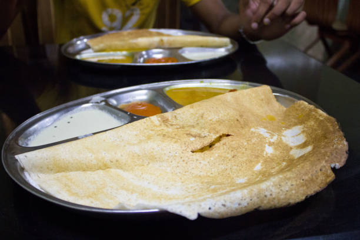

Masala Dosa

Description
Masala Dosa is a popular South Indian dish consisting of a crispy crepe made from fermented rice and lentil
batter. It is typically filled with a spiced potato mixture and served with coconut chutney and sambar, offering
a delightful combination of flavors and textures.
Ingredients
- 1 cup rice
- 1/2 cup urad dal (skinned black gram)
- 1/4 cup chana dal (split chickpeas)
- 1/2 teaspoon fenugreek seeds
- Potatoes, onions, and spices for the masala filling
Steps
- Soak rice, urad dal, chana dal, and fenugreek seeds separately for 6 hours or overnight.
- Grind the soaked ingredients to form a smooth batter. Ferment the batter for 8-12 hours.
- Cook the potato masala with onions and spices for the filling.
- Spread a ladleful of batter on a hot griddle, add the potato masala, and cook until crisp.
- Serve hot with coconut chutney and sambar.